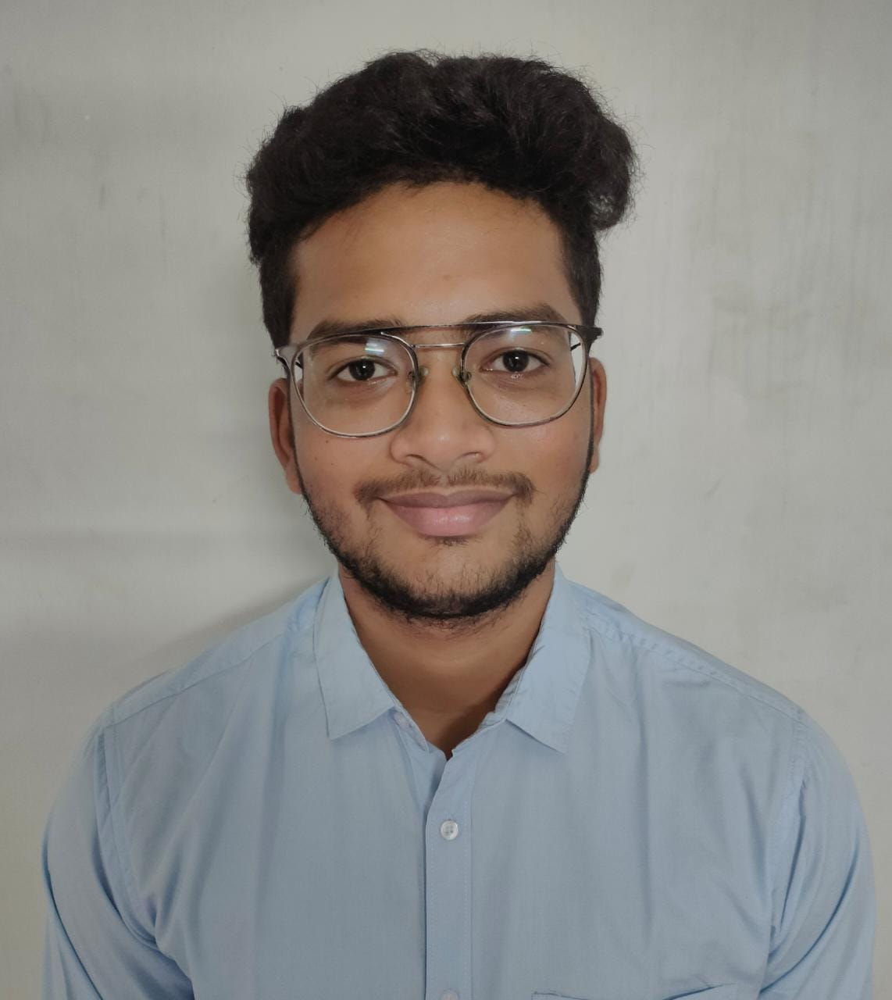

Introduction
Welcome to my Portifolio!
I am Ramakrishna Satti, currently pursuing my B.Tech at SRM University AP and doing my internship at Western Digital(WD). I am looking forward to an intellectually challenging role in an esteemed and progressive organization where my abilities will not be only nurtured but also recognized. My goals Include improving my knowledge of current concepts in computer science, Machine Learning, and Full stack development as well as becoming a team player and self-confident person who strives to excel.
Education
SRM University - AP B.Tech(CSE)(July 2019 - present)
(Amaravathi AP INDIA) CGPA-8.5
Bharatiya Vidya Bhavan's 12th Class(CBSE)(2018-2019)
Tadepalligudem AP INDIA Percentage-79.8
Projects
Movie Chrome Review(22-10-2019 – 22-01-2020):
• Designed and developed a full-stack web application for the users to book tickets, giving reviews to the movies, cast of the movie, info of the movie, and reviews.
• The application’s front-end User-interface(dashboard) was designed using HTML, CSS, and JS.
• MySQL and PHP were used for the backend operations between the server and the database.
Internet Usage Billing System (15-06-2020 – 15-07-2020):
• Designed and developed a web application for internet users to check their internet usage, bill, and payment.
• Front-end-User-Interface(dashboard) for the application was designed using NetBeans.
• Java, adobe photoshop was used.
Data Science using Python(25-03-2021 – 25-05-2021):
• Analyzed the salary dataset and cleaned the dataset.
• Visualizing the dataset using histogram, bar graph, and heatmap.
• Linear regression on the given dataset.
Interview Creation Portal(10-04-2022 – 12-04-2022):
• Designed and developed a full-stack web application for the creation of interviews on a specific date, modifying the data, and updating the data.
• Front-end-User-Interface(dashboard) for the application was designed using JSP(JAVA SERVER PAGE).
• MySQL was used for the backend.
Research project on Classification of Breast Cancer using ML Techniques(18-01-2022 – 18-05-2022):
• Conducted analysis on different ML models for the Classification of Breast Cancer as it is benign or malignant. (Datasets used from Kaggle)
• We proposed our model which does data augmentation and the two dense layers and flatten layers.
Experience
Currently I am doing my internship at Western Digital(WD) Bangalore. I am working in the Firmware Verification team. I gained experience on Python, HTML, CSS, JS, MySQL and GIT.
I worked on various projects Like 1.5 TB in SD card and YODA dashboard. In YODA dashboard we used HTML, CSS and MySQL.
Technologies Known
Programming Languages: Python, SQL
Web Technology: HTML, CSS, JS, Node.js, React.js
Database: MySQL, Mangodb, SQLite
Other: GIT, GITHUB, Windows
Resume
Click the below link to download the Resume.
RESUME
Contact Details
E-mail-sattiramakrishna333@gmail.com
Contact Number- 9441882121